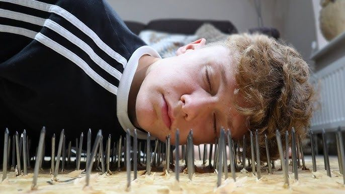

איך להפוך את חוסר הנוחות להרגל? 🛋️
פורסם במקור ב LinkedIn
איך להפוך את חוסר הנוחות להרגל? 🛋️
לא מזמן השתתפתי בהרצאה על תסמונת ה-Expert Beginner, נטיה טבעית שלנו בני האדם לצבור ידע בסיסי ולהרגיש מומחים, ולכן נתקעים שם ולא ממשיכים להשתפר. זה גרם לי לחשוב.
למה כל כך קל לנו להיתקע באזור הנוחות, גם כשאנחנו יודעים שזה עוצר אותנו?
והמסקנה שלי: זה מנגנון הגנה טבעי.
אנחנו משקיעים המון זמן ומאמץ כדי ללמוד תחום מסוים, להתמחות בו, להרגיש שאנחנו שולטים, וברגע שאנחנו סוף סוף מגיעים לרמה שבה אנחנו "יודעים", כל מידע חדש שמערער את הידע הזה הופך להיות "מאיים" או לכל הפחות מאמץ לא רצוני.
אז אנחנו נמנעים ממנו.
אגב, תסמונת ה-Expert Beginner היא ההפך מאפקט המתחזה.
אם אפקט המתחזה גורם לנו להרגיש ש"אנחנו לא באמת יודעים כלום" גם כשאנחנו יודעים המון, אז ה-Expert Beginner הוא בדיוק הפוך - אנחנו מאמינים שאנחנו מומחים, ולכן מפסיקים להטיל ספק בעצמנו ולהתקדם.
למה זה קורה?
📌 האגו נכנס לתמונה – "אני כבר יודע, אני לא צריך ללמוד מאחרים."
📌 עומס, שחיקה ולחץ – "אין לי זמן/כוח ללמוד משהו חדש עכשיו, וזה עובד אז למה לשנות?"
📌 פחד מלאבד את הביטחון – ידע חדש יכול לערער את מה שכבר בנינו.
📌 סביבות עבודה שמבודדות ידע – בארגונים גדולים, הרבה פעמים מפתחים עובדים רק על "החלק שלהם" ולא יודעים איך שאר המערכת בנויה.
📌 היעדר סביבה תומכת ללמידה – אם בצוות אין אווירה שמעודדת לשאול, להודות בחוסר ידע וללמוד – אנשים יעדיפו להישאר במה שהם כבר יודעים.
📌 שחיקה וחוסר באנרגיה – אף אחד לא יכול להיות לומד אקטיבי כל החיים. לפעמים אנחנו פשוט צריכים הפסקה.
אז איך שוברים את זה? איך הופכים חוסר נוחות להרגל?
🔹 מודעות – קודם כל, להבין שזה קורה. לעצמנו. לאנשים סביבנו. לכולם.
🔹 שאלות במקום קביעות – להחליף "אני יודע" ב-"מה אני לא יודע פה?".
🔹 לשחק מחוץ למגרש שלנו – לחקור טכנולוגיות חדשות, לגעת בפרויקטים שאנחנו לא מכירים, לשאול שאלות מחוץ לתחום.
🔹 ליצור מרחב בטוח ללמידה – בסביבה שבה אפשר לשאול בלי להרגיש טיפש, כולם מרוויחים.
🔹 לשבור מחסומים ארגוניים – אם בארגון שלכם מפתחים "נעולים" על תחום אחד – תעודדו חפיפה והבנה מערכתית רחבה יותר.
🔹 להפסיק לפחד מלא לדעת – כי באמת, אף אחד מאיתנו לא יודע הכל.
יצר הסקרנות הטבעי שלנו הוא הכלי שיודע להוציא אותנו מלהתקע במקום הזה, בהינתן סביבה מאפשרת. אנחנו רק צריכים להיות קשובים לעצמנו ולהיות מודעים לכך, ואף לעשות בדיקה תקופתית עם עצמנו למול השאיפות ולנגד החששות.
והדבר הכי חשוב בעיני? להבין שזה מחזורי.
אנחנו לא יכולים להיות לומדים אקטיביים כל החיים. לפעמים טבעי "לנוח" באזור הנוחות שלנו - השאלה היא לכמה זמן, ואיך יודעים מתי לצאת שוב.
